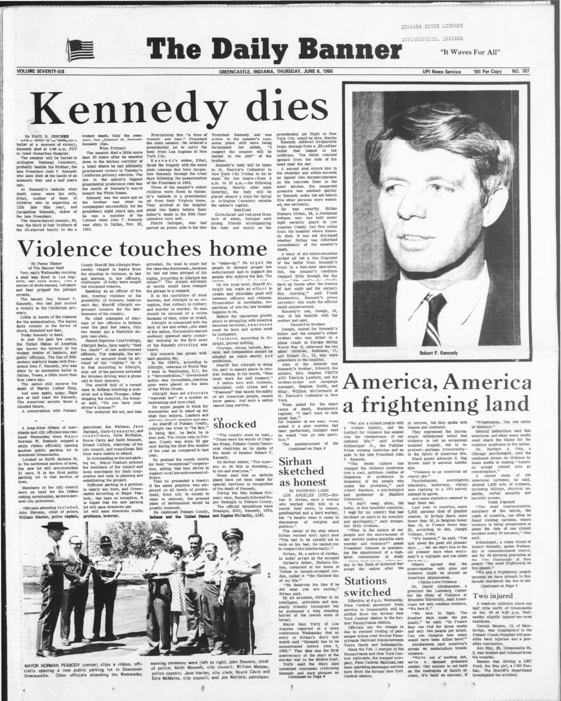
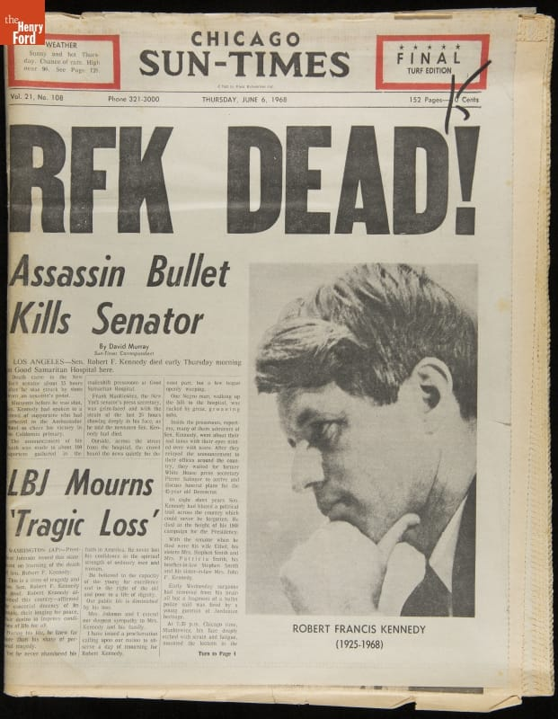
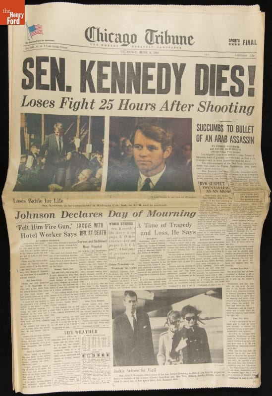

HN-669 · June 6, 1968 · Crime, Law & Justice > Murders & Assassinations > Political assassinations
Source: The Daily Banner, p. 1 — original page.
Report: The prominent “Kennedy dies†report stated that Robert F. Kennedy died at 1:44 a.m. Pacific time, after the shooting covered the previous day.
Assessment: Confirmed outcome and correction of the evolving status. These two original pages preserve the narrow interval between an initial life-threatening injury report and confirmed death. A suspect's arrest or first explanation of motive is not the same as a completed court finding.
Authentic images retrieved from Hoosier State Chronicles (Indiana State Library) and The Henry Ford (museum collection scan). Article crops are located using the archive's own OCR word coordinates and rendered at native crop resolution; article clips are assembled from the archive's own article-block images; page images marked "archive tiles" are stitched from the archive's own tiled page service at its 256-px tile cap; page images marked "issue PDF" are single pages rasterised from the archive's own issue PDF, with the page chosen by matching the headline against the PDF's text layer; page scans are reduced-size access renditions. No images were generated, mocked, or retouched.



Status: Archive images acquired
Authentic archive-owned image renditions were retrieved for this record and are displayed above. The source-acquisition manifest preserves the original pre-acquisition feasibility assessment.
URL (preserved verbatim): https://newspapers.library.in.gov/?a=d&d=TDB19680606-01.1.1
Saved research report: Historical_Newspaper_Event_Research_653-677_2026-10-23.md
Evidence note: A newspaper report means a historical publication made a claim; it does not establish that claim as fact. Contemporary reporting is separated from later scholarly context and our own assessment.